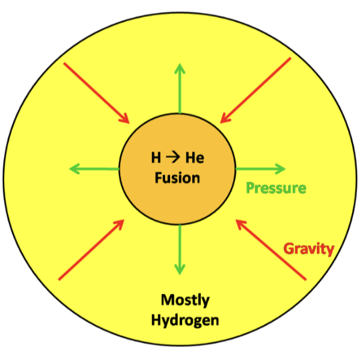
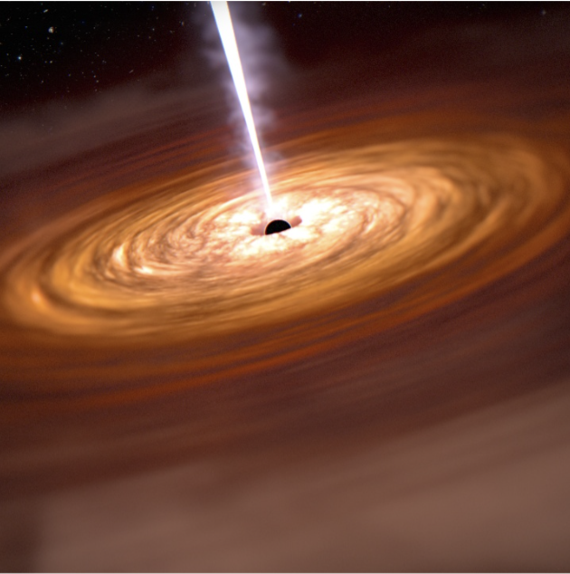
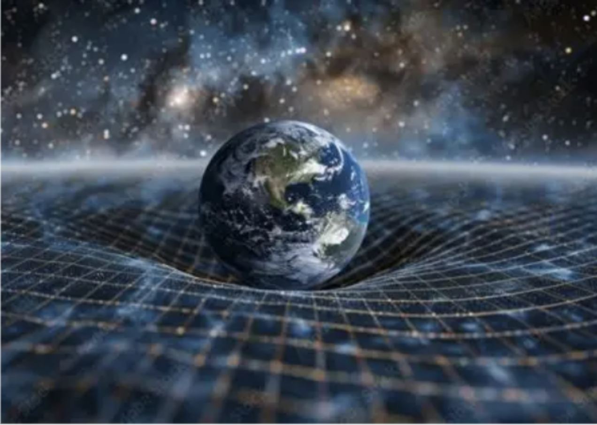

Physics • Astronomy
What would happen if you fell into a black hole?
While you may not be planning a trip to the most dangerous astronomical body right now, this question allows us to explore the immense prowess of gravity, the mysteries of the event horizon and escape velocity, and pushes physics to its absolute limit with concepts like “spaghettification” and extreme red/ blue shift.

Firstly, we must consider how a black hole is formed. Newton discovered that anything with mass exerts a gravitational force on every other object with mass. For instance, you, the reader, are currently attracting everything in the universe towards you by virtue of having mass. This gravitational force gets larger when the mass of the object gets larger. Therefore, stars like our sun must experience a huge gravitational force of attraction. This begs the question, “How do stars not immediately collapse in on themselves?”. This is resolved by the nuclear fusion that occurs in the heart of stars: hydrogen atoms (specifically the centre of the atom, called a nucleus) fuse together to release huge amounts of energy in the form of heat which exerts pressure outwardly to balance the gravitational force compressing the “main sequence” star.

But once the star runs out of hydrogen in around ten million to ten billion years, it must start fusing heavier and heavier elements, which release less energy as their mass increases. This means that eventually, it will run out of fuel and gravity will become too powerful causing the star to collapse. If the star is sufficiently massive (about eight times the mass of our sun), the shockwave produced from the collapse will produce a supernova, an explosion of heat and light, distributing the elements it has formed throughout the universe. This means that we are all made of stardust! What’s left of the star is called a neutron star, a much smaller, dense object filled with tightly packed neutrons (a type of particle that makes up an atom). When the neutron star is dense enough, it will again have a large gravitational force pulling it inwards, causing a kind of second collapse. This forms an object with such strong gravity that not even light can escape. For this reason, we call it a black hole.
Now that we know how a black hole is formed, let’s consider its properties. Escape velocity is the speed at which an object must be travelling to leave a gravitational field. For instance, a rocket must be travelling at about 11km/s to break free of Earth’s gravitational pull. In the heart of a black hole, the escape velocity is higher than the speed of light -and as Einstein famously theorised, nothing in our universe can travel faster than light. This means that if anything were to enter a black hole, even rays of light that travel at 300,000,000 m/s, it would become trapped and unable to escape. The event horizon is the point at which the escape velocity is equal to the speed of light, so this is the furthest point from the centre at which it is impossible to escape and therefore forms the “surface” of the black hole.

More complexly, a black hole has an interesting effect on spacetime. Spacetime is a fusion of the three spatial dimensions and time and can be imagined as a magic carpet. In this analogy, the carpet will contract when stepped on which demonstrates how mass warps and curves spacetime around it.
When curvature is created, objects follow the path created in space and time, leading to changes in the flow of time as well as movement of matter. Black holes have a very very large mass as we know and therefore curve space time a lot. In fact at the singularity- the centre of a black hole with zero size and infinite density, where all laws of physics break down- curvature of spacetime is infinite which has some interesting effects that we will now explore!
With the context out of the way lets send an astronaut into a black hole! On our astronaut’s journey to the event horizon, gravity is so immense that there is a huge difference between the gravitational pull on their head than on their feet because gravitational pull of a massive body decreases as distance of the object from the centre of mass of the body increases. The differing gravitational force between the two points is called tidal force and here causes the astronaut’s feet to be pulled much more than their head, causing the astronaut to stretch into a long, thin, noodle of matter- this effect is called “spaghettification”! Also, light that falls close to the black hole is “blue-shifted” meaning the light waves are bent due to the immensely strong gravitational field. This bending of light increases its frequency and energy, frying our poor astronaut. Due to the warping of space-time around a black hole, for an observer close to the black hole like our astronaut, the universe would be seen to speed up and all of the time of the universe would pass before their eyes right as they hit the event horizon. Unfortunately, the astronaut would die before reaching the event horizon but what if we consider the possibility that our newly spaghettified astronaut could survive beyond the event horizon? Firstly, space-time distortion beyond the event horizon is so distorted that space and time swap. This means that the path from event horizon to singularity (The outermost part of the black hole to the centre) is not actually a journey in space but rather in time, meaning that the singularity is inescapable and attempting to escape is as futile as trying to escape tomorrow.
As we can see, after the implosion of a dying star, we are left with a small point of highly concentrated mass called a black hole. Due to its escape velocity being higher than the speed of light, it is impossible for anything to escape its gravitational point beyond the event horizon. For this reason, if you fell into a black hole, you would be ripped apart into a long, thin strand by tidal forces and fried by super high energy light due to gravity’s effect on light rays falling towards a black hole before you even met the event horizon. For larger black holes, where its tidal forces before the event horizon are weaker, you may live to meet the event horizon, beyond which time and space would be inverted due to the distortion in spacetime created by the infinite curvature around the singularity or centre of the black hole. You would inevitably meet the singularity in time, where you would become “black hole matter” for the rest of time and space.